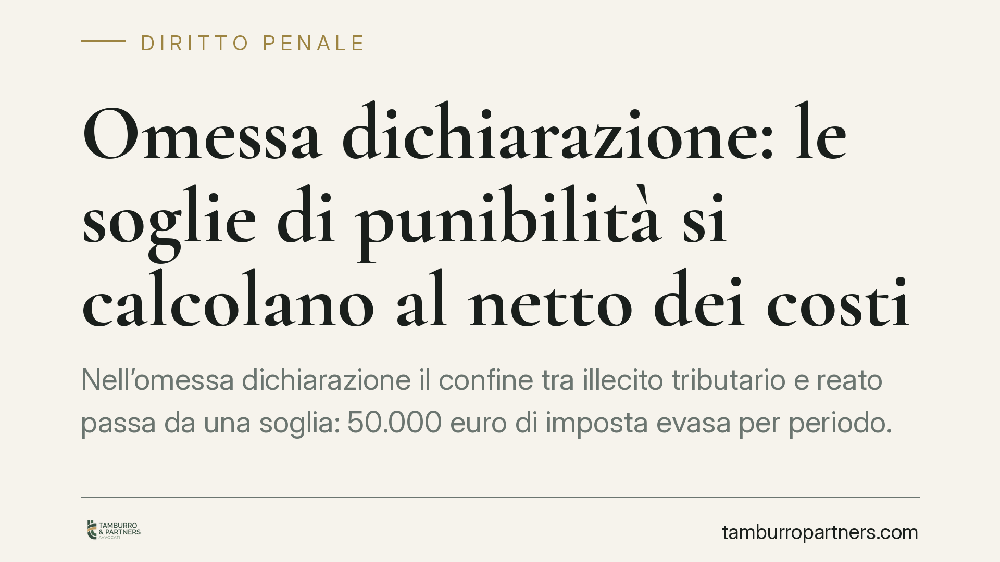

Omessa dichiarazione: le soglie di punibilità si calcolano al netto dei costi
Nell'omessa dichiarazione il confine tra illecito tributario e reato passa da una soglia: 50.000 euro di imposta evasa per periodo. Una recente pronuncia della Cassazione Penale ribadisce che quel calcolo va effettuato al netto dei costi effettivi, veritieri e inerenti all'attività d'impresa. Un dettaglio che può spostare l'intera posizione del contribuente dal penale all'amministrativo.

Il fatto e il principio
Una recente pronuncia della Sezione penale della Cassazione (estremi da verificare in banca dati prima di ogni uso processuale) torna sul reato di omessa dichiarazione previsto dall'art. 5 del D.lgs. 74/2000. Il nodo non è la condotta omissiva in sé, ma la quantificazione dell'imposta evasa, cioè il parametro che determina il superamento della soglia di punibilità.
Il principio affermato è lineare: per stabilire se l'imposta evasa supera la soglia penale, il giudice deve tenere conto dei costi sostenuti dall'impresa, a condizione che siano effettivi, veritieri e inerenti all'attività. Non basta assumere i ricavi lordi o l'imponibile accertato dall'Amministrazione finanziaria.
Inquadramento normativo
L'art. 5 D.lgs. 74/2000 punisce chi, al fine di evadere le imposte sui redditi o sul valore aggiunto, non presenta la dichiarazione annuale pur essendovi obbligato. Si tratta di un reato omissivo proprio, che si consuma allo scadere del termine di presentazione. La soglia, dopo la riforma operata dal D.lgs. 158/2015, è fissata in 50.000 euro di imposta evasa per ciascuna imposta e per ciascun periodo d'imposta.
La soglia svolge una funzione selettiva: distingue l'inadempimento che resta sul piano tributario-amministrativo da quello che assume rilevanza penale. Al di sotto di quel valore la condotta può comportare sanzioni fiscali, ma non il reato.
La definizione di imposta evasa è fornita dall'art. 1, lett. f) dello stesso decreto. In sintesi, è la differenza tra l'imposta effettivamente dovuta e quella indicata in dichiarazione; nell'omessa dichiarazione, mancando il dato dichiarato, il raffronto avviene con l'imposta che sarebbe stata dovuta sulla base del reddito effettivo. Proprio perché si ragiona sull'imposta "dovuta", nel calcolo entrano i costi che riducono la base imponibile.
Imposta accertata e imposta evasa non coincidono
Qui si innesta un passaggio spesso trascurato: l'imposta accertata in sede tributaria e l'imposta evasa penalmente rilevante non sono la stessa cosa.
Il giudice penale non è vincolato all'accertamento dell'Amministrazione finanziaria. Vale il principio di autonomia del giudizio penale: il giudice ricostruisce autonomamente il reddito e la relativa imposta, con i criteri e gli standard probatori propri del processo penale. Un avviso di accertamento, anche definitivo, non si traduce automaticamente nel superamento della soglia.
Di conseguenza, costi che l'Agenzia delle Entrate può aver disconosciuto in via presuntiva possono invece essere valorizzati in sede penale, se la difesa dimostra che sono reali e collegati all'attività d'impresa.
Implicazioni pratiche
Per l'imprenditore o il professionista indagato per omessa dichiarazione, il margine difensivo si gioca sulla ricostruzione dei costi. Portare l'imposta evasa sotto i 50.000 euro significa far venir meno la rilevanza penale del fatto.
L'onere, però, si sposta sulla difesa. Chi invoca la deduzione di costi deve fornire gli elementi che ne provino esistenza, veridicità e inerenza. Non sono sufficienti affermazioni generiche o ricostruzioni induttive: servono documenti, movimenti, giustificativi.
Questo rende la fase di raccolta documentale decisiva fin dall'inizio del procedimento, spesso già durante le indagini preliminari.
Cosa fare in concreto
- Ricostruisci l'intera contabilità del periodo contestato, individuando i costi effettivamente sostenuti e collegati all'attività.
- Conserva e organizza i giustificativi: fatture, contratti, estratti conto, documenti di trasporto, prova dei pagamenti.
- Verifica il calcolo dell'imposta evasa in autonomia rispetto all'accertamento tributario, isolando le voci disconosciute solo in via presuntiva.
- Distingui i costi deducibili provabili da quelli indimostrabili: solo i primi incidono sulla soglia penale.
- È opportuno coordinare consulente fiscale e difensore penale fin dalle prime fasi, per allineare ricostruzione contabile e strategia processuale.
Conclusione
Nell'omessa dichiarazione la partita si decide sul rigore probatorio. La soglia di punibilità non è un dato fisso che discende dall'accertamento fiscale, ma il risultato di una ricostruzione da provare documento per documento. È su questa autonomia del giudizio penale, e sulla capacità di dimostrare l'effettività e l'inerenza dei costi, che si fonda la difesa.
---
Contributo informativo a cura di Tamburro & Partners Avvocati - Avv. Giuseppe Tamburro. Non costituisce parere legale.
Ogni condominio ha una storia a sé.
Se gestisci un'amministrazione e vuoi un confronto su una specifica questione condominiale, scrivi allo studio. Ti rispondiamo entro un giorno lavorativo.